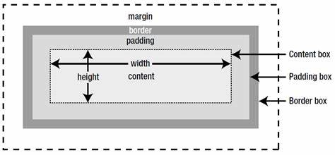

Box Model
:

In CSS, the term "box model" is used when talking about design and layout.
The CSS box model is essentially a box that wraps around every HTML element.
It consists of: margins, borders, padding. The image above illustrates the box model.
Explanation of the different parts:
Content: - The content of the box, where text and images appear
Padding: -Clears an area around the content. The padding is transparent
Border: - A border that goes around the padding and content
Margin: - Clears an area outside the border. The margin is transparent
Thanks